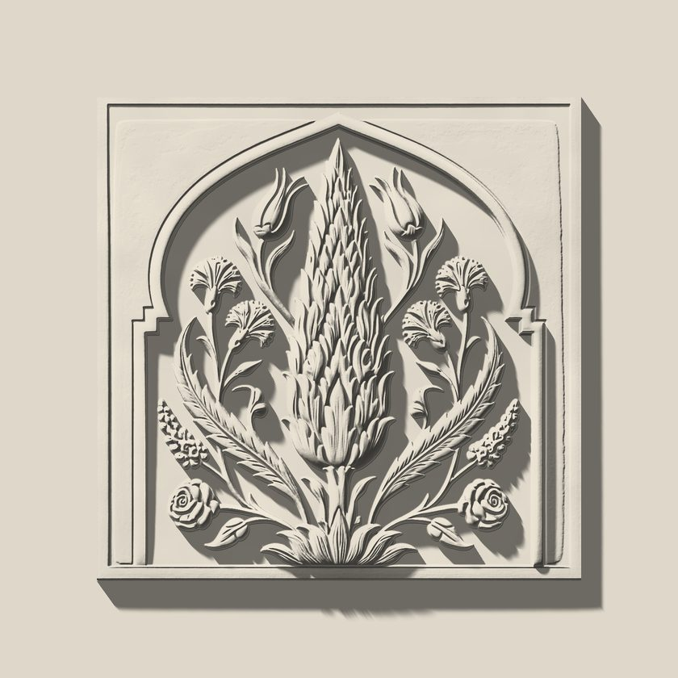

Your drawing, cast faithfully.
Lab: hero in auto mode (pointer on desktop, scroll on touch).
Scroll on. The next panel is driven by scroll only: its light travels from dawn to dusk as it crosses the screen.

End of lab.
Lab: hero in auto mode (pointer on desktop, scroll on touch).
Scroll on. The next panel is driven by scroll only: its light travels from dawn to dusk as it crosses the screen.

End of lab.